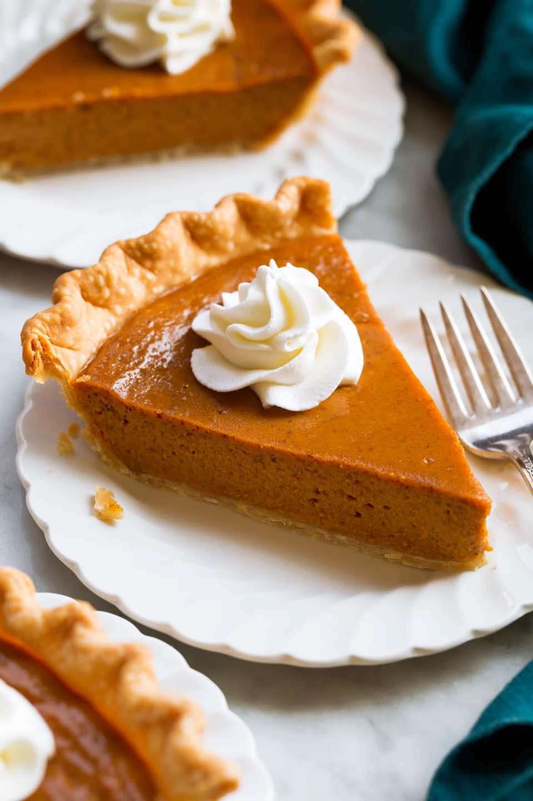
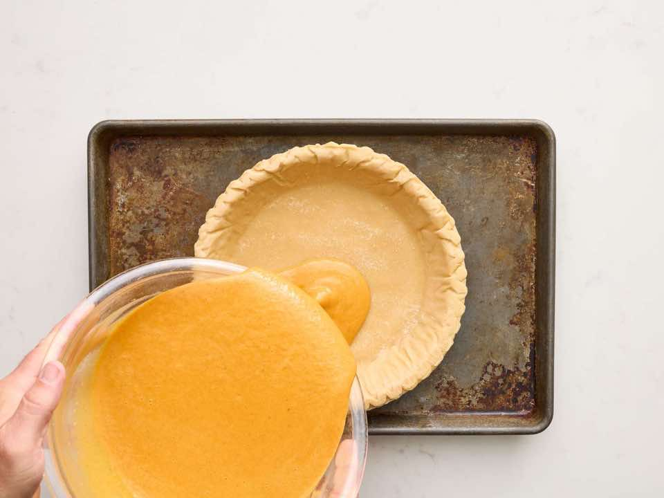

Home

Libby's Famous Pumpkin Pie
Dessert - Pie
Source:
allrecipes.com
Serving size: 8
Prep time: 10 mins
Cook time: 55 mins
Ingredients
- 1 (9 inch) unbaked deep-dish pie crust
- 0.75 cup white sugar
- 1 teaspoon ground cinnamon
- 0.5 teaspoon salt
- 0.5 teaspoon ground ginger
- 0.25 teaspoon ground cloves
- 2 large eggs
- 1 (15 ounce) can LIBBY'S® 100% Pure Pumpkin
- 1 (12 fluid ounce) can NESTLE® CARNATION® Evaporated Milk
Directions
-
Gather the ingredients. Preheat the oven to 425 degrees F (220 degrees
C).
- Combine sugar, cinnamon, salt, ginger, and cloves in small bowl.
- Beat eggs lightly in large bowl.
- Stir in pumpkin and sugar-spice mixture.
- Gradually stir in evaporated milk. Pour into pie shell.
-
Bake in the preheated oven for 15 minutes. Reduce temperature to 350
degrees F (175 degrees C) and continue to bake until a knife inserted
near the center comes out clean, 40 to 50 more minutes. Remove from the
oven and set on a wire rack to cool to room temperature.
-
Serve cooled pie immediately or refrigerate until ready to serve. (Do
not freeze as this will cause the crust to separate from the filling.)
Nutrition
Amount per Serving
- Calories: 283
- Total Fat: 12g
- Saturated Fat: 5g
- Cholesterol: 59mg
- Sodium: 357mg
- Total Carbohydrate: 39g
- Dietary Fiber: 3g
- Sugars: 26g
- Protein: 6g
Gallery
